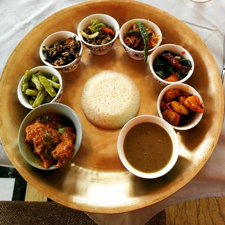

Sikkim food mainly comprises noodles, Gundruk and Sinki soups, thukpas, tomato achar pickle, traditional cottage cheese, fermented soybean, Bamboo shoot, fermented rice product and some other fermented dishes owing to its very cold climate. However, rice is the stable food of Sikkim. Fermented foods comprise of 12.6% of the total food consumption of Sikkim. Mostly, fermenting is done at home rather than purchasing. A few examples of traditional fermented foods are kinema, gundruk, sinki, maseura, and khalpi. In the morning, many Sikkimese individuals drink a full mug of tea and have curry as a meal The cuisine of comprosises mainly of steamed and bolied food. Local herbs and spices are preffered instead of maslas. Sikkimese mostly prefer local drinks with food which includes local beer(Chhaang) and rum. The tibatean and nepalese cuisin also have a effect on sikkim's cuisine.